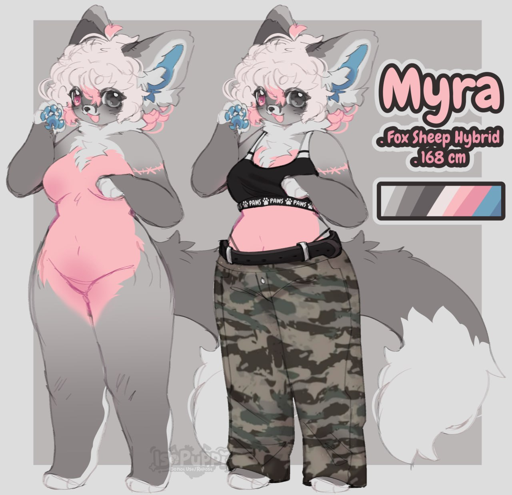

Myra/Myro

Welcome! Here, I will show of my fursonas.
Myra (formerly Myro): My Sona for experimenting
This used to be my main sona. Now, I am reporpusing it for Experimenting! Which so far meant- turning her into a Woman.
She will receive very cute outfits (a different definition than your cute probably, weirdo.) that I think fit her well. Shell also be good for a second sona for stickers or if a friend wants to be depicted with a girl instead.
Gray and pink with homophobia in its eyes... I still think those are pretty colours.
More art will come. The current refsheet is drawn by This lovely artist on toyhouse! And ofc, same rule, NO NSFW!